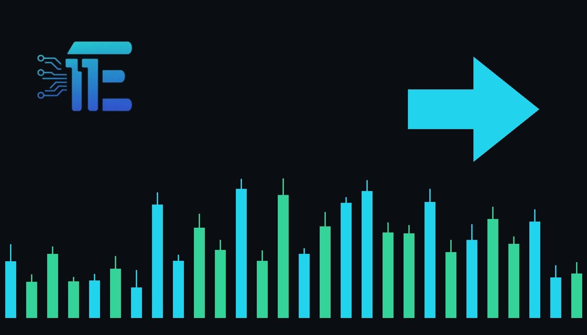

Central Bank Buying Cushions Gold Amid Fed Rate Hike Pressuresការទិញរបស់ធនាគារកណ្តាលជួយទប់តម្លៃមាសចំពេលមានការរំពឹងទុកលើការតំឡើងអត្រាការប្រាក់ពី Fed
XAU/USD impact: ◆ Mixedផលប៉ះពាល់លើ XAU/USD: ◆ ចម្រុះ

Persistent central bank purchases are helping support gold as the precious metal retreats from record highs due to inflation, a stronger US dollar, and expectations of further Federal Reserve rate hikes. This ongoing institutional demand acts as a crucial floor for the market during broader macro weakness.
ការទញិមាសជាបន្តបន្ទាប់ពីសំណាក់ធនាគារកណ្តាលកំពុងជួយគាំទ្រតម្លៃមាស ទោះបីជាតម្លៃបានធ្លាក់ចុះពីកម្រិតខ្ពស់បំផុតដោយសារអតិផរណា ដុល្លារអាមេរិកខ្លាំង និងការរំពឹងទុកលើការដំឡើងអត្រាការប្រាក់ពី Fed ក៏ដោយ។ តម្រូវការជាស្ថាប័ននេះដើរតួនាទីយ៉ាងសំខាន់ក្នុងការរក្សាលំនឹងទីផ្សារក្នុងអំឡុងពេលមានភាពទន់ខ្សោយផ្នែកម៉ាក្រូសេដ្ឋកិច្ច។
Gold has experienced a significant retreat from the record highs reached in January. Market sentiment has faced heavy pressure driven by persistent inflation concerns, a stronger US dollar, and growing expectations that the Federal Reserve will implement further interest rate hikes.
មាសបានធ្លាក់ចុះយ៉ាងខ្លាំងពីកម្រិតកំណត់ត្រាដែលបានឈានដល់ក្នុងខែមករា។ សេចក្តីរំពឹងទុករបស់ទីផ្សារបានជួបប្រទះនឹងសម្ពាធយ៉ាងខ្លាំងដែលជំរុញដោយបញ្ហាអតិផរណា ការឡើងថ្លៃនៃប្រាក់ដុល្លារអាមេរិក និងការរំពឹងទុកថាមហាសន្និបាតធនាគារកណ្តាលអាមេរិក Fed នឹងបន្តដំឡើងអត្រាការប្រាក់បន្ថែមទៀត។
Despite these headwinds, prominent market voices point out that aggressive central bank buying continues to keep gold afloat. Official sector accumulation provides underlying strength, offsetting some of the downward pressure stemming from monetary tightening expectations and currency strength.
ទោះបីជាមានឧបសគ្គទាំងនេះក៏ដោយ អ្នកជំនាញទីផ្សារបានចង្អុលបង្ហាញថា ការទិញមាសយ៉ាងសកម្មពីសំណាក់ធនាគារកណ្តាលនៅតែបន្តជួយទ្រទ្រង់តម្លៃមាសឱ្យមានស្ថិរភាព។ ការប្រមូលផ្តុំទុនបម្រុងផ្លូវការនេះផ្តល់នូវកម្លាំងគាំទ្រពីក្រោម ដោយទូទាត់សងចំពោះសម្ពាធចុះក្រោមដែលកើតចេញពីការរំពឹងទុកនៃការរឹតបន្តឹងគោលនយោបាយរូបិយវត្ថុ និងភាពខ្លាំងនៃប្រាក់ដុល្លារ។
The transmission channel for these dynamics operates primarily through the US dollar and real interest rate expectations. When the Fed signals or hints at further rate hikes, the US dollar and Treasury yields typically strengthen, raising the opportunity cost of holding non-yielding assets like gold and putting downward pressure on prices.
ច្រកបញ្ជូនសម្រាប់សក្ដានុពលទាំងនេះដំណើរការជាចម្បងតាមរយៈប្រាក់ដុល្លារអាមេរិក និងការរំពឹងទុកអត្រាការប្រាក់ពិតប្រាកដ។ នៅពេលដែល Fed បង្ហាញសញ្ញានៃការដំឡើងអត្រាការប្រាក់បន្ថែម ប្រាក់ដុល្លារអាមេរិក និងទិន្នប័ណ្ណបំណុលរតនាគារជាទូទៅមានកម្លាំងខ្លាំង ដែលធ្វើឱ្យការកាន់កាប់ទ្រព្យសកម្មដែលគ្មានអត្រាការប្រាក់ដូចជាមាសមានតម្លៃខាតបង់ឱកាសខ្ពស់ និងដាក់សម្ពាធថយចុះលើតម្លៃ។
Conversely, sustained central bank purchases and persistent inflation fears provide a structural floor for bullion. If macroeconomic data or inflation readings show signs of cooling, reducing the likelihood of aggressive Federal Reserve tightening, gold would likely find renewed support. On the other hand, a continuation of hawkish monetary policy and a robust dollar would likely extend the downward pressure on prices.
ផ្ទុយទៅវិញ ការទិញបន្តរបស់ធនាគារកណ្តាល និងការភ័យខ្លាចអតិផរណាបន្តបន្ទាប់ផ្តល់នូវមូលដ្ឋានគ្រឹះដ៏រឹងមាំសម្រាប់លោហៈមានតម្លៃនេះ។ ប្រសិនបើទិន្នន័យម៉ាក្រូសេដ្ឋកិច្ច ឬសូចនាករអតិផរណាបង្ហាញសញ្ញានៃការធូរស្រាល ដែលកាត់បន្ថយលទ្ធភាពនៃការរឹតបន្តឹងយ៉ាងខ្លាំងពី Fed នោះតម្លៃមាសអាចនឹងទទួលបានការគាំទ្រជាថ្មី។ ម្យ៉ាងវិញទៀត ការបន្តគោលនយោបាយរូបិយវត្ថុតឹងរ៉ឹង និងប្រាក់ដុល្លារដ៏រឹងមាំទំនងជាបន្តដាក់សម្ពាធថយចុះលើតម្លៃ។
Traders monitoring XAU/USD should closely watch upcoming US economic releases, Federal Reserve communications regarding future rate paths, and currency fluctuations in the dollar index for directional cues.
អ្នកជួញដូរដែលតាមដាន XAU/USD គួរតែតាមដានយ៉ាងដិតដល់នូវទិន្នន័យសេដ្ឋកិច្ចអាមេរិកនាពេលខាងមុខ ការទាក់ទងគ្នារបស់ Fed ទាក់ទងនឹងដំណើរផ្លូវអត្រាការប្រាក់នាពេលអនាគត និងការប្រែប្រួលរូបិយវត្ថុនៅក្នុងសន្ទស្សន៍ដុល្លារសម្រាប់ជាទិសដៅ។
Key takeawaysចំណុចសំខាន់ៗ
- Gold has retreated from record highs due to a stronger US dollar and expectations of further Federal Reserve rate hikes.
- តម្លៃមាសបានធ្លាក់ចុះពីកម្រិតខ្ពស់បំផុតដោយសារប្រាក់ដុល្លារអាមេរិកខ្លាំង និងការរំពឹងទុកនៃការដំឡើងអត្រាការប្រាក់ពី Fed ។
- Continuous central bank buying is providing critical support and helping keep gold afloat amid broader macro headwinds.
- ការទិញមាសជាបន្តបន្ទាប់ពីធនាគារកណ្តាលកំពុងផ្តល់ការគាំទ្រយ៉ាងសំខាន់ដល់ទីផ្សារមាសចំពេលមានបញ្ហាម៉ាក្រូសេដ្ឋកិច្ច។
- Traders should monitor US inflation data, Fed rate expectations, and dollar movements for near-term direction.
- អ្នកជួញដូរគួរតែតាមដានទិន្នន័យអតិផរណា ការរំពឹងទុកអត្រាការប្រាក់របស់ Fed និងចលនារបស់ប្រាក់ដុល្លារ។
Original commentary by THE MARKET CODE, based on public reporting from Yahoo! Finance: GC=F News. Written with the help of AI. Educational only, not financial advice.
មតិវិភាគដើមដោយ THE MARKET CODE ផ្អែកលើការរាយការណ៍សាធារណៈពី Yahoo! Finance: GC=F News។ សរសេរដោយមានជំនួយពី AI។ មាតិកាអប់រំប៉ុណ្ណោះ មិនមែនជាដំបូន្មានហិរញ្ញវត្ថុទេ។